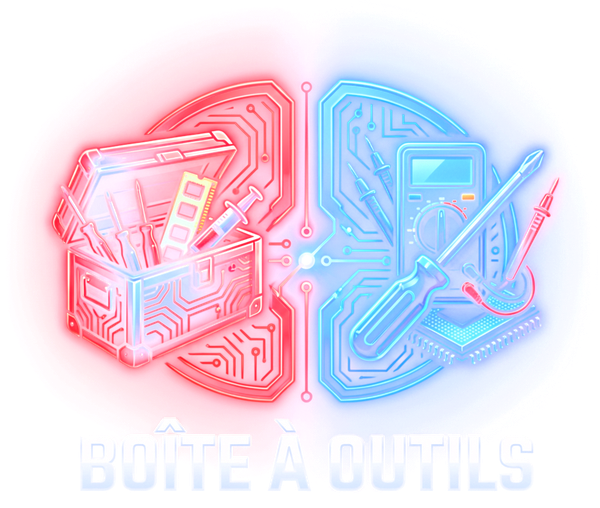

Boîte à outils
Des outils gratuits et simples pour comprendre et entretenir votre PC. Aucun compte, aucune installation.
Décodeur de bips BIOS
Votre PC bipe au démarrage ? Tapez le rythme entendu et découvrez la pièce à vérifier.
Ouvrir le décodeur ›
Calculateur d'alimentation
Processeur, carte graphique, disques… Estimez la consommation de votre PC et la puissance d'alimentation conseillée.
Calculer ›
Config PC
4 configurations PC gamer conseillées, de ~800 € à ~2 800 €. Changez une pièce : la compatibilité est vérifiée automatiquement.
Composer ma config ›
Téléchargements
Les logiciels gratuits indispensables (CPU-Z, HWiNFO, CrystalDiskInfo, Rufus…) avec les liens officiels.
Voir les logiciels ›
Mon PC chauffe-t-il trop ?
Les températures normales du processeur et de la carte graphique, au repos et en jeu.
HDD ou SSD ?
Quel stockage choisir et quel gain attendre pour accélérer un vieux PC.